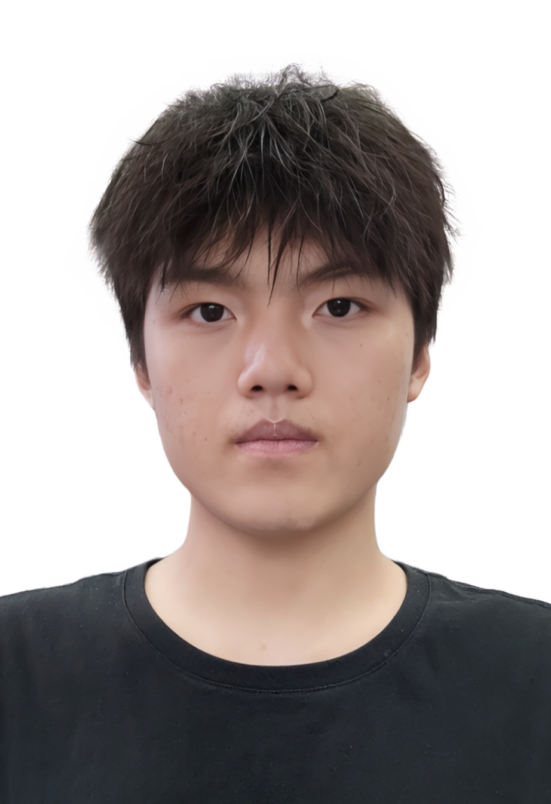

WANG YITAO
我是华南理工大学广州学院 机器人工程 2025届本科生。
专注于机器人运动控制、嵌入式硬件集成与系统设计。
年龄：21 岁
电话：15918888384
邮箱：wyytw68@gmail.com
个人文档：
Notion
代码仓库：
GitHub
脚踏实地，努力在创新与实践中不断突破，成为卓越的机器人工程师

RoboMaster 2024 平衡步兵（轮足机器人）
背景：传统四轮底盘通过性及控制鲁棒性不足；
方案：倒立摆模型 + LQR 控制器；
成果：复杂地形稳定行走，荣获 RoboMaster 全国二等奖。
RoboMaster 2023 哨兵（自动车）
问题：决策系统状态切换僵化；
方案：ROS2 + BehaviorTree 高层决策 + 改进 A*；
成果：机动性提升，夺得全国二等奖。
RoboMaster 2022 自动瞄准系统
问题：高速运动下目标跟踪精度不足；
方案：基于 OpenCV 装甲板检测 + SORT+EKF；
成果：预测误差<5%，获全国一等奖（南部季军）。
实习经历：高擎机电 / 大疆创新 / 库犸动力
...
专利与荣誉
授权专利：
- 一种转运机器人减震式移动机构 | CN218986277U
- 一种发射管道切换装置 | CN117404960A
- 一种射击装置 | CN117622850A
主要竞赛荣誉：
- 2022 RoboMaster 全国一等奖（南部季军）
- 2023 & 2024 RoboMaster 全国二等奖
- 2024 RoboCon 全国三等奖
个人展望
希望在硕士阶段深耕智能控制与人工智能结合...
“脚踏实地，努力在创新与实践中不断突破。”